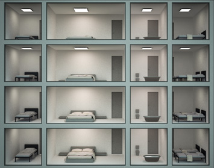
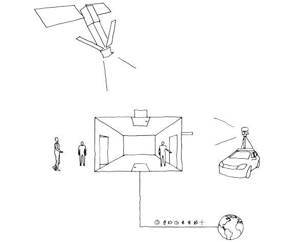
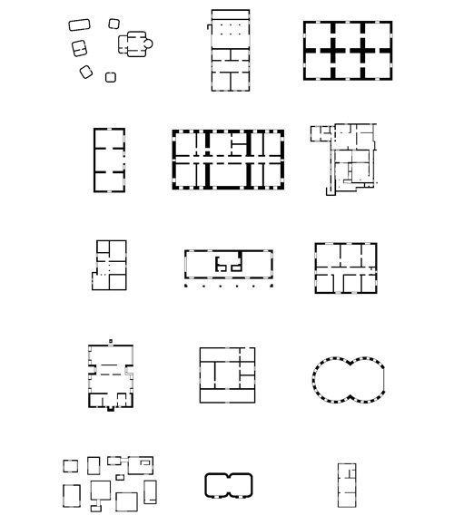
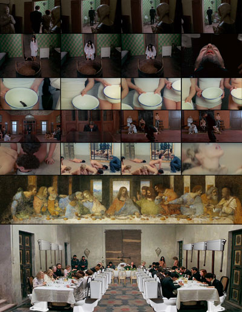
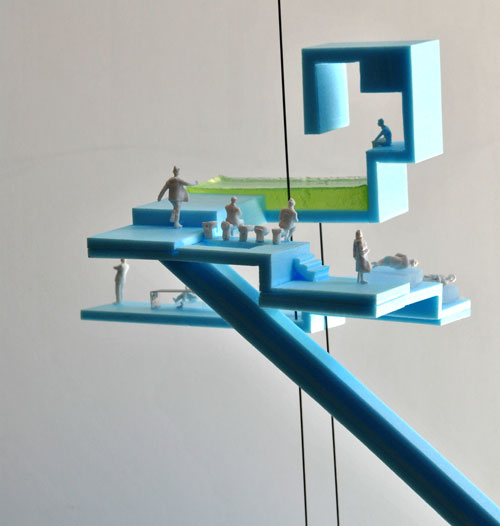
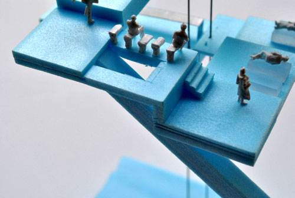
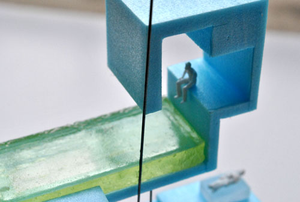

5 Obstacles of Architecture
Article for Arq.a- 2011
WHY
Archicture is a free discipline. This initial contradiction in terms reflects the ambiguity of the profession: since Corbusier
defined the future in 1923 (Vers une architecture) we are doomed to execute versions of his profecy, with variable degrees
of sucess and compliance.
TASK
Each guest was invited to solve an architectural problem, part of a larger project. The aim of each participation is to trigger a
response, and not the solving of the problem. The answer can be another question (a more elaborate obstacle).
FORMAT
Each participant is free to utilize any medium of expression (drawing, model, 3d, sketch, text) given that they comply with
the one page limitation. Further editing of the material and conclusion will be done by FORA.
WHO
Alex Geroussis+Olka Kiszkielis
Beth Hughes
Carolina Sumares + Rik den Heijer
André Albuquerque
Vassilis Oikonomopoulos
EDITED BY
FORA
João Fagulha
Raquel Oliveira
João Ruivo
THE MODERN DOGMA
The success of Corbusier's war against pre-established architectural canon, has transformed itself in a new dogma. After 90 years of preaching, modern architecture is finally a ready-to-consume product. Its supremacy hasn't been shaken by the sucessive waves of contestation (teamX in the 60's, postmodernism in the 80's, deconstructivism in the 90's...). The revolution operated on the way buildings are conceived proved to be very efective, to the point that it can adapt itself to different cultural contexts, and also to evolving social organizations. The modern envelope remains as a very powerfull tool.
Our aim is not to confront the modern dogma, but to question
the notion of dwelling in a context that has greatly changed in
the last decade. The border between the private and public
domain, where architecture played a decisive role since the
begining of times, has eroded with the increasing power of
the digital social networks.
This is a amazing oportunity to dissect architecture as space
defining medium.
At the scale of a House, one can identify 5 possible pre-concepcions
/ obstacles:
1 - WINDOW
Alex Geroussis+Olka Kiszkielis

In the age of internet and the increasing power of social networking the architecture of the dwelling seems hard to compete with the web. The once revolutionary modernist form now seems more like a dogma than an actual need. The border between the public and the private domain has been corroded and obscured. The user has as much need of the virtual as of the real. Where the window presents one view, the internet offers a much bigger variety of views pleasures and interactive possibilities. The window to the web is one that leads to far more private domains of human activity. We suggest a radical architectural approach. All the private compartments of the building shall be moved on the main facade in plain view from the public realm. An architectural answer based on the dipole of man both as a voyeur and exhibitionist, a human being in need of real interaction and intimate contact. In the realm of obscurity architecture promotes a vicious circle where the subject becomes the object , the public becomes private and vice versa. We suggest an architecture of honesty and transparency in an ultimate if not futile attempt to stand up to its predecessors.
2 - DOOR
Carolina Sumares + Rik den Heijer

The traditional doors of our houses, one representative front door and one functional backdoor, have been complemented by new doors. While our front door might still function as a representative of the house on a local scale, by means of technologies as google earth, our houses are more and more represented by the view from the sky. Smartphones tell us exactly how far we are located from the roof of the house we want to visit. This “entrance door” from the sky has to be designed. Like the Palm Islands in Dubai, the recognisability in google earth is all that matters. But all physical doors of our houses are bypassed by a digital one that confuses all hierarchy in privacy and intimacy we might want to implement. Private moments may be shared live all around the world and people in the same physical space don’t even have to interact with each other for being socially active. Our traditional living spaces are being contaminated by new doors. How do we deal with that?
3 - PARTITION WALL
Beth Hughes

The partition is not an obstacle. It is merely a device (like door, window and furniture) that defines space. The specific deployment of the devices articulates human relationships – the partition is a trace of a wider social context.
At various times and places identical conditions have arisen reflecting different accepted social and cultural normality. The same architectural construct can host multiple interactions. The obstacle is not the partition, but the social context. It is not a question of reinventing partitions (or even doing away with them, necessarily) but rather the how, when, where and why a partition is employed.
List of plans in no particular order: Chinese rural house, Villa Savoye by Le Corbusier, Swiss Barn House, Dogon dwelling Mali, Coleshill Berkshire by Sir Roger Pratt, Serbian beehive house, traditional Japanese house, Shotgun House New Orleans, Fisher House by Louis Kahn, Malaysian House, Moriyama House by SANAA, Troglodyte house, Moller House Adolf Loos, Krivoarbatsky Lane House by Konstantin Melnikov, Utopian Housing plan by Will Alsop.
4 - SHIT PIPE
André Albuquerque

5 - FURNITURE
Vassilis Oikonomopoulos
It is both crucial and critical to think of furniture as an obstacle in relation to the architecture of a living unit. The critical question is how our perception and understanding of architecture is challenged by the existence of furniture and the crucial problem is what does furniture really do to architecture? In an oversimplified past, it was still hard vs soft, modular vs static, choice vs culture, identity vs homogeneity etc, based on a logic of binary distinctions. But thinking of it more intelligently, furniture can be much more interesting and intriguing. It is architecture-becoming in whatever forms, which means relative to architecture but also hyperchangeable almost delirious. It can be obstacles but it can also be accelerators and modifiers, it can be mediums of continuity and events-positions of fragmentation, it can measurable and identifiable or it can be functional/dysfunctional on a completely separate plane of objectified entities.
Think of furniture as a system, ultimately within, always imprisoned in the interior. However, its presence modifies the itnerior productively, it augments and enhances the relationship to form but also the relationship with function, which architecture imposes. Thinking of the house as a container with interior and exterior surfaces, furniture then would have to be some sort of inner membranes that maintain the adaptability of the total and reinforce the potentials of its program. As it conveys lived experience, it becomes highly interactive and by definition adaptive, containing a kind of endless possibilities that enable it to deform and resist in the presence of various environmental forces.
Furniture is also safe and habitually recognisable. It is a habit and as such, it has to be constantly reinvented. From the point of view of the user, it becomes a referential point through which to negotiate architectural design. It also becomes a medium, which functions in rhythms to produce new ways of experiencing architectural thought. It could be called as a specific type of portal, as much of a virtuality and an abstraction as of materialistic reality which we can use in multiple ways to experiment, comprehend and combine to create effects and produce events. Moving them and moving around them can explain a whole lot of a biogrammatic history of lived experience in space.
Furniture, more than visual form and configuration, is the way we experience the house, how we tend to do things plus how we habitually reflect upon ourselves. It can provide a hyperdimensional reality, changing and altering our sense of orientation, challenging our brain’s ability to find its way around topologically. It allows to pick up new dynamics as we navigate through a cognitive representation of existing space, and to understand the perverse relationship of connectivities in space and time.
Its positioning disturbs the order. It creates different orders, more personal and also more abstract, a kind of orientation in continuous flux, as we customarily connect the micro spatial configuration of the multi-directional interior to the generally accepted rules of the shape and coordinates of space as we understand it. That is its hyperdimensionality, a quality that produces an excess of effects over determinate spatiality.
Therefore, we could approach furniture more as a technology and a tool. Not a tool of design, but of brain power, a node in a wider system of brain functions that determine the infrastructure of the house, the negotiation of its space and more importantly, a historical connectivity between matter and action. An event that triggers reactions and thought processes, stirring up information in loads, combining senses, tenses and dimensions on material surfaces. As such they are playful twists that address existing and future forms and functions, movements and possibilities and operate as technologies of emerging experiences.
CONCLUSION
FORA
Conclusion appears under the shape of a house destined to be inhabited by a small group: in between the scale of the individual and the collective building, the new family is defined. Domestic continuity replaces compartmentalization. The different levels establish a false hierarchy, adulterated by the programmatic and symbolic occupation of each platform. An experience of transition and circulation, simultaneity of actions and program/function. The interior, which replaces the facade as the representative and mediating element, still reveals the last traces of a distant everyday life: beds, wc, steps, table-kitchen, a collective bath tub. The house, has outlived the context, but maintains with it an infrastructural anchor, out of prudery and nostalgia.



A Porta
Published version of the article here.
Team: João Moura Fagulha, João Prates Ruivo, Raquel Maria Oliveira, Alex Geroussis, Olka Kiszkielis, Beth Hughes, Carolina Sumares, Rik den Heijer, André Albuquerque, Vassilis Oikonomopoulos. Client: Arq.a